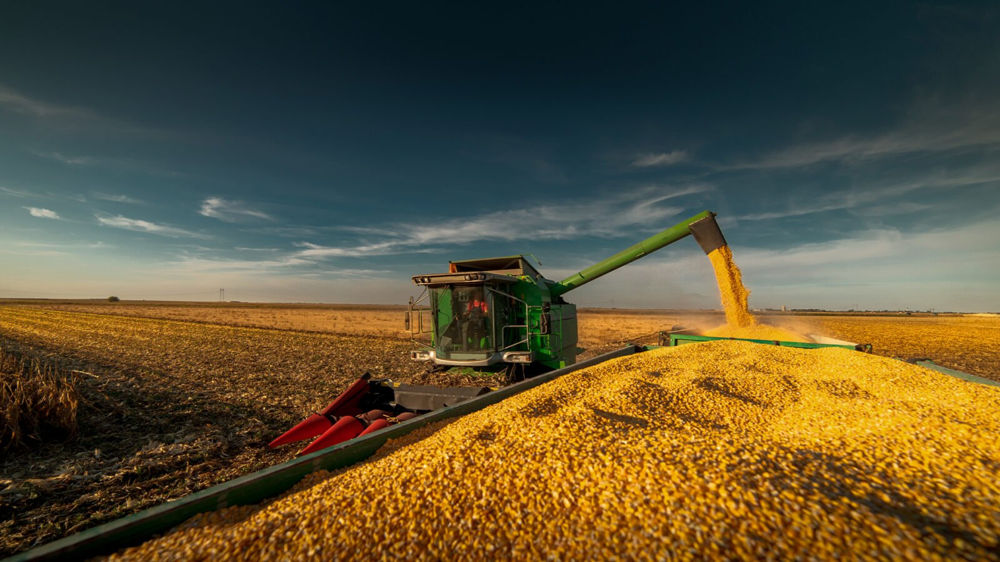

Soja
A soja é a verdadeira força motora do campo, um grão versátil que transforma paisagens e impulsiona economias ao redor do mundo. Desde a semente lançada ao solo até a imensidão das lavouras que tingem o horizonte de verde e dourado, seu cultivo reflete o empenho diário de quem vive da terra. Ela traduz inovação, dedicação e eficiência, sendo o pilar de uma agricultura moderna que conecta o interior produtivo aos grandes mercados globais.
Além de sua relevância econômica indiscutível, a soja desempenha um papel vital no cotidiano de milhões de pessoas. Presente na nutrição humana, na alimentação animal e na produção de energias renováveis como o biodiesel, esse grão demonstra uma capacidade única de transformação. É a prova de como a terra, quando bem cuidada, gera prosperidade, sustentabilidade e recursos essenciais para o futuro.

Milho

O milho é o verdadeiro ouro do campo, um cereal grandioso que molda tradições e sustenta economias ao redor do mundo. Desde o grão germinado no solo fértil até a imponência dos milharais que balançam ao vento com suas espigas douradas, seu cultivo traduz a dedicação secular de quem cultiva a terra com paixão. Ele une rusticidade, alta produtividade e tecnologia, sendo a base de um sistema agrícola dinâmico que alimenta cadeias produtivas inteiras e conecta o produtor rural aos mercados globais.
Além de sua importância econômica incomparável, o milho desempenha um papel indispensável no dia a dia da sociedade. Presente na alimentação humana, na formulação de rações essenciais para a pecuária, na indústria e na fabricação de biocombustíveis, este cereal revela uma versatilidade extraordinária. É a demonstração viva de como o campo, aliado ao trabalho e à inovação, gera segurança alimentar, desenvolvimento e energia para o futuro.
Contato
Preencha os campos abaixo para entrar em contato.